冬天跑步有感，一件难而正确的事
一、引子
本周二，上海终于迎来了 2026 年的第一场雪，比以往来的更早一些，当时用手机录下了打开窗，雪花飘进来的时刻。

冬天的感觉瞬间拉满，虽然下的时间不长，但下的还挺大，没有积雪但着实是过了 把 下雪的瘾。
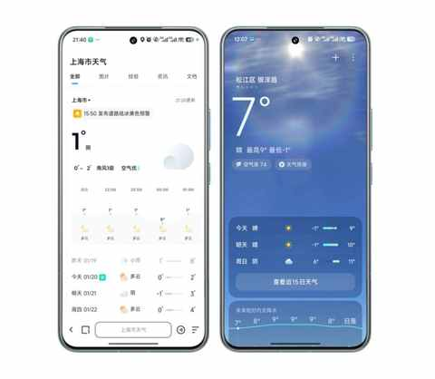
下雪也代表着降温已经悄然而至，伴随着些许冬天的风，跑起来的时候体感温度只会更低一点。
第二天，周三，是晴空万里且阳光明媚的一天，当然是按计划继续跑步！
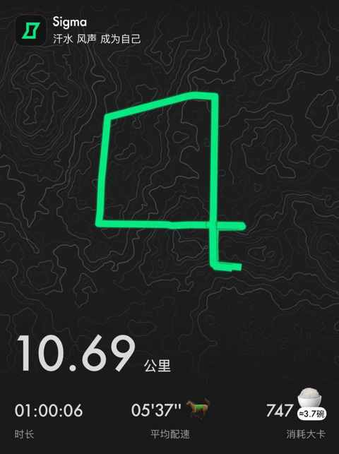
二、难而正确的事
在冬天跑步，毋庸置疑，是一件难而正确的事情！
冬天跑步的难度，不在于跑的过程中有多痛苦，而是在于启动成本和坚持的难度，双双增加！
可能早上起来想跑，出趟门之后便打消了这个想法，意志力在寒冷面前不堪一击！
你可能会问，为何你有这个感受？因为痛过！经历过！
不妨看看下面这张图，是一年前的 2025 年 1 月份跑步的情况：一周才跑两次，最长的间隔超过 5 天。
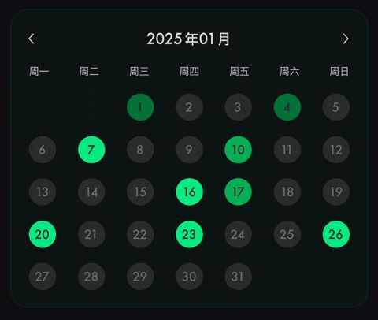
今年可能得益于前面几个月备赛半马和全马，节奏保持的还行，目前已经跑了 12 次，一起有 160km，预计本月还会再跑 4 次，累计跑量能到 200km。
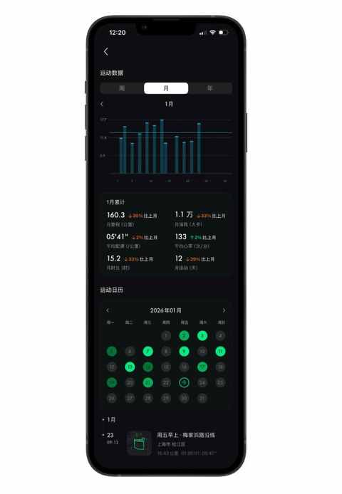
但我依然想说的是，这个过程很不容易，一直在做调整……
由此，总结了下面 3 个要点，希望能帮到想在冬天坚持跑步的跑友们：
1️⃣ 保暖的穿着
冬天跑步，最怕的是出汗后容易着凉感冒，长裤是必须的，帽子和手套也是每次都会穿戴上的两个单品。
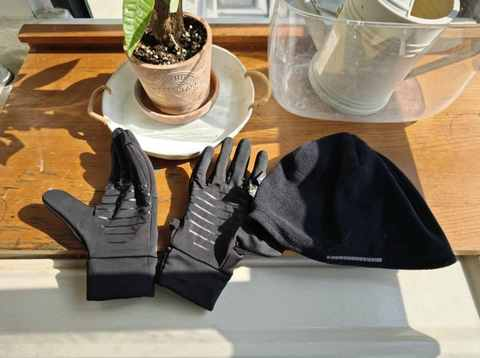
有时候遇到阳光明媚的时候，会戴上墨镜，气温低一点会再添上一件，是一件口袋很多的骑行马甲。
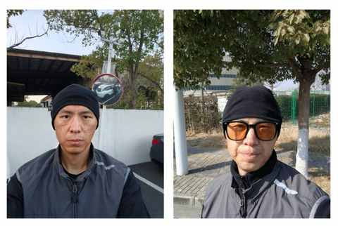
唯一的缺点是这个造型，看着有点不好惹之外，其他的都是优点：
① 保暖效果好
头部和身体躯干都比较扛风，即使出汗比较多也不用担心风一吹就感冒。
② 轻便不臃肿
采取比较流行的三层穿衣法，叠穿，穿和脱都很方便。
从里到外分别是：速干长袖或短袖、卫衣、马甲。
③ 简单有效率
尽量简单，能最大程度上降低冬天跑步的启动成本，我每次变化的基本都是穿在最里面的那件：速干长袖或短袖。
也 把腰包省掉了，因为马甲的口袋足够多，发现胸口的口袋特别适合放手机。
2️⃣ 跑休节奏调整
1 月份的跑休节奏基本上是跑一休一为主，偶尔会出现连续两天没有跑的情况，秉持着事不过三的原则，如果连续两天没跑步，第三天必须得续上。
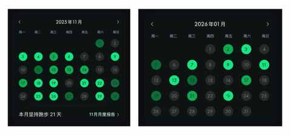
通过上图的对比不难发现，跑五休二和跑一休一的明显差别。
跑五休二能很好的提升跑量，跑一休一则能更好的适配冬天的情况，因为连续 2-3 天跑步对于现在的我来说，其执行难度有点过高，根本坚持不下来。
冬天跑步，需要一个更适合在冬天坚持跑步的节奏。
3️⃣ 尽量白天跑
重要的事情说三遍：
冬天非必要不夜跑！
因为是真的冷啊，太阳落山之后，体感温度至少降个四五度，而且晚上的冬风有着更强的穿透性。白天则好很多，尤其是晴天，在暖阳下慢跑是一种很治愈的事情，在冬天阳光会变得温柔。
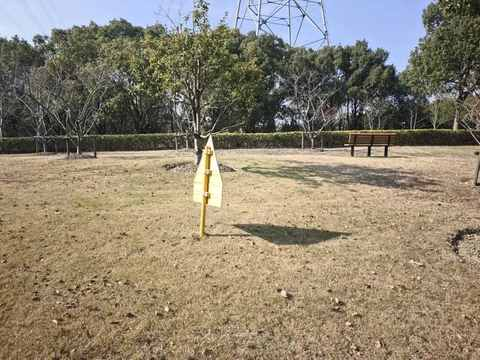
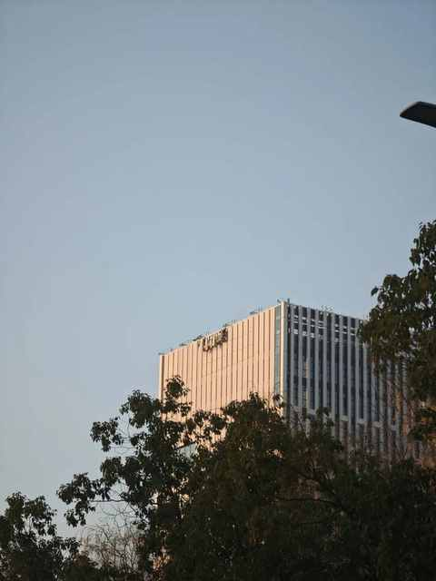
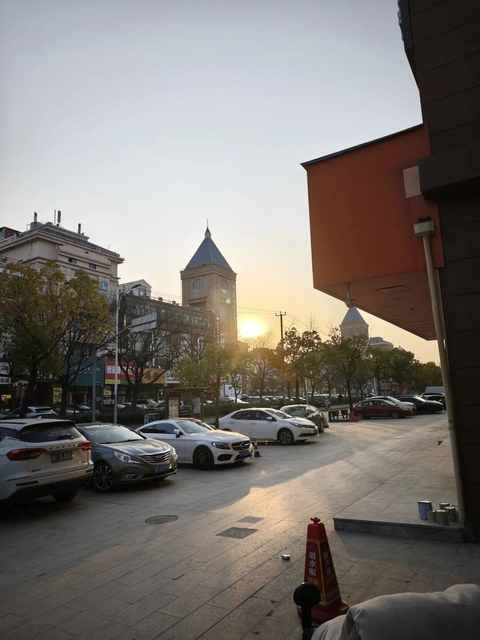
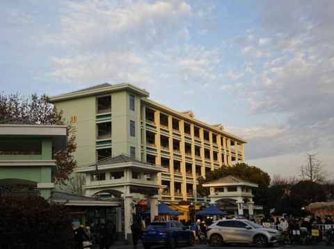
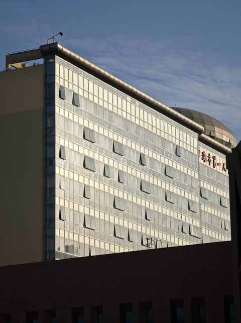
上午 9 点到下午 4 点，都是阳光比较充足的时间，和夏天在阳光下跑步是截然不同的感受。
三、结语
所以，冬天跑步，终究是一场与自我的温柔较量。
难在启动，贵在坚持。当你用保暖的装备破解低温，用合适的节奏强身健体，便会发现：真正的“正确”，并非跑了多远跑的多快，而是与冬天坦然相处的从从容容。
近期文章
从插混换到纯电，一年开2万公里后，我已经不在意能耗且没有里程焦虑！
2026，中年人的自觉：学会与问题长期共存
90年，35岁，跑步30个月，3442km，带来的5个改变
真香！坚持使用小鹤双拼一年后，这4个感受不吐不快
农村、大专生、笨小孩：我的来时路
不思考，你就会买很多并不需要的东西
别再问我省多少油钱了！作为 8年新能源车主，我想说
35岁的这个11月，我竟挑战了这么多“第一次”
90年，35岁，日更90天，有了这 3 个意外收获
小米高端化成了吗？拿15S Pro当主力机4个月，我有这5个真实感受